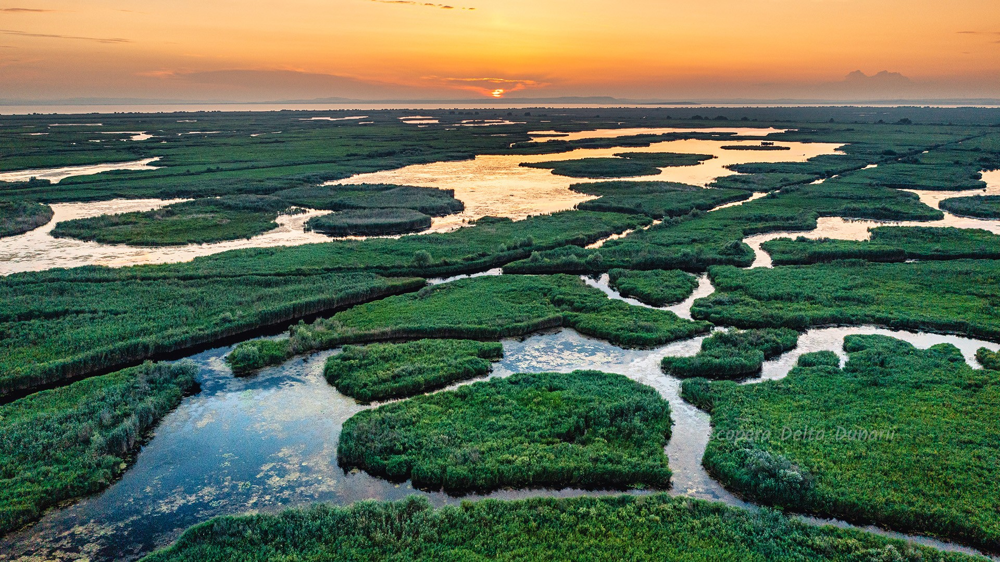

DELTA DUNĂRII
Delta Dunării (3446 km²), aflată în mare parte în Dobrogea, România și parțial în Ucraina, este a doua ca mărime și cea mai bine conservată dintre deltele europene. Delta Dunării a intrat în patrimoniul mondial al UNESCO în 1991, fiind clasificată ca rezervație a biosferei la nivel național în România și ca parc național în taxonomia internațională a IUCN. Aceasta se suprapune atât siturilor de importanță comunitară Delta Dunării (sit SCI) și Delta Dunării (zona maritimă); cât și ariilor de protecție specială avifaunistică Beștepe - Mahmudia și Delta Dunării și Complexul Razim - Sinoie.
Parcul național include rezervațiile naturale: Capul Doloșman, Cetatea Histria, Complexul Vătafu - Lunghuleț, Complexul Sacalin Zătoane, Grindul și Lacul Răducu, Grindul Chituc, Grindul Lupilor, Insula Popina, Lacul Potcoava, Pădurea Caraorman, Pădurea Letea, Roșca - Buhaiova, Corbu-Nuntași - Histria, Lacul Belciug, Lacul Rotundu, Arinișul Erenciuc, Complexul Periteașca - Leahova, Lacul Nebunu, Pădurea Babadag - Codru, Dealul Ghiunghiurmez și Sărăturile Murighiol.
CETATEA HISTRIA
Cetatea Histria este o arie protejată de interes național ce corespunde categoriei a III-a IUCN (rezervație naturală de științific și sit arheologic), situată în județul Constanța, pe teritoriul administrativ al comunei Istria. Aria naturală se află în partea estică Dobrogei, în extremitatea nord-estică județului Constanța lângă Lacul Sinoe, aproape de limita teritorială cu județul Tulcea, în apropierea drumului național DN22 care leagă municipiul Constanța de orașul Tulcea
Rezervația adăpostește mai multe specii floristice (unele foarte rare) dintre care: vitrigon (Eryngium maritimum), alior (Euphorbia peplis), cârcel (Ephedra distachia), pelin (Artemisia tschernieviana), bărbișoară (Allysum hirsutum), volbură (Convolvulus lineatus), varză de mare (Crambe maritima), pătlăgină (Plantago cornuti), ață de mare (Ruppia maritima), brândușă de nisip (Merendera sobolifera)[5], garofiță (din speciile Dianthus pseudarmeria și Dianthus bessarabicus), siminoc (din specia Helichrysum arenarium), grășătoare (Sagina maritima), chimionul porcului (Peucedanum arenarium) sau valentiță (Tanacetum milefolium).
GURA PORTIȚEI
Gura Portiței este situată pe o fâșie îngustă de nisip, între Marea Neagră și limanul Golovița, din Delta Dunării, făcând parte din comuna Jurilovca. Inițial sat pescăresc și cherhana, Gura Portiței (Portița) este cunoscută astăzi ca una dintre cele mai retrase (și încă relativ liniștite) destinații turistice de pe litoralul românesc, o alternativă pentru Vama Veche, devenită aglomerată în ultimii ani. Accesul se face de regulă cu vaporașul, de la Jurilovca, Tulcea, cu autovehicule speciale se poate ajunge și pe drumul de coastă, fie de la Vadu, Constanța, pe la Periboina, fie de la Sfântu Gheorghe, Tulcea.
Denumirea Gura Portiței desemna comunicarea existentă inițial între limanul Golovița și Marea Neagră, închisă în anii 1970, ceea ce a transformat Golovița într-un lac închis, cu apă în curs de desalinizare și eutrofizare. Lacul comunică la nord (liber) cu lacul Razim, iar la sud cu limanul Sinoe, printr-un sistem de ecluze. Zona este o parte a „Rezervației biosferei deltei Dunării”.